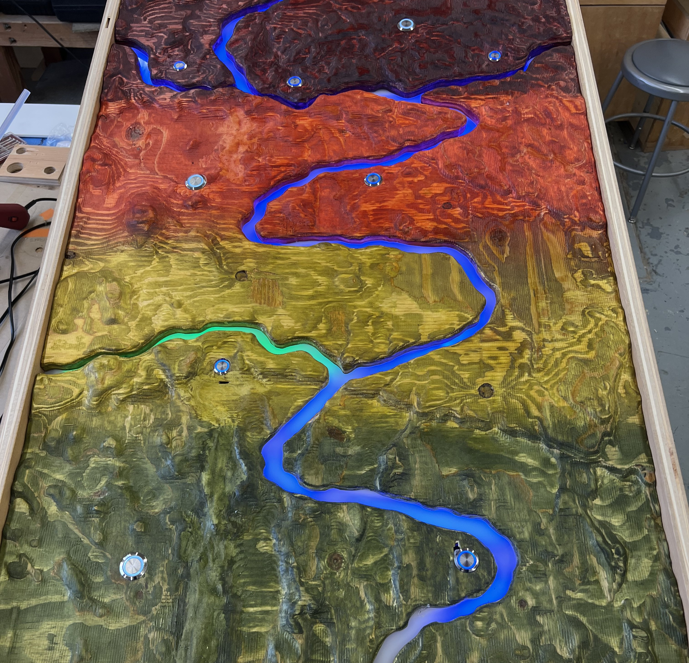

where is the water
augmented reality sandbox with circle detection and projection mapping.
unity kinect v2.0
echoing emotions
video interaction with facial expression and gesture detection.
deepface mediapipemass residue
Perlin noise reacts to audio amplitude and skeletal movements.
skeletal tracking Perlin noisefairy trail
particle system fireworks follow joint from pose detection.
javascript pose estimation
body image ltd
touch triggers live video feed overlaying JS matrix projection.
conductive copper madmappercaretaker's lounge
reactive audio-visual installation honoring the history of the space.
kinect 360 motion sensorsimagining the future
custom drawing software that sends to a projection.
processing client-server model
headwaters
interactive exhibit about water isotopes in different pnw climates.
teensy 4.0 c++enter the matrix
see the world as the matrix live via any web cam.
python opencv